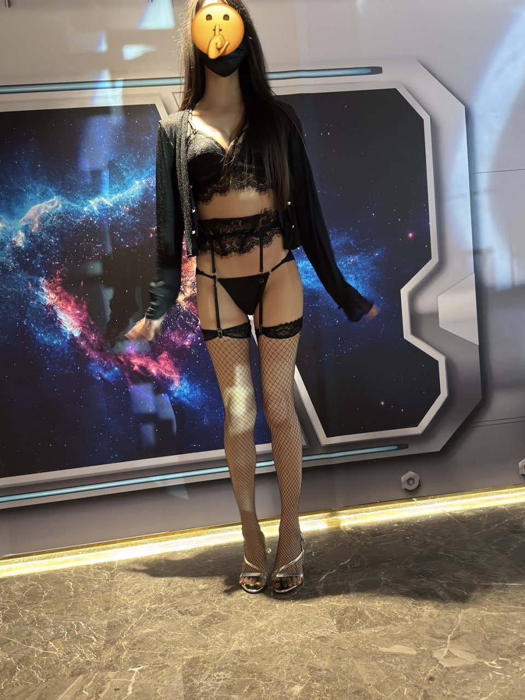
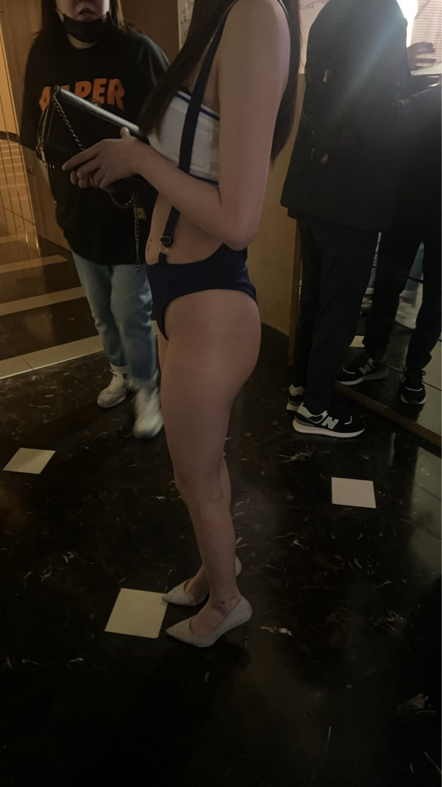
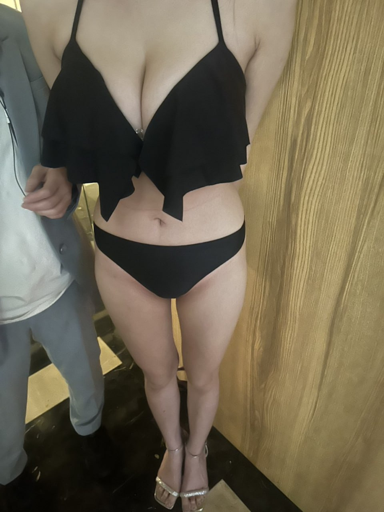
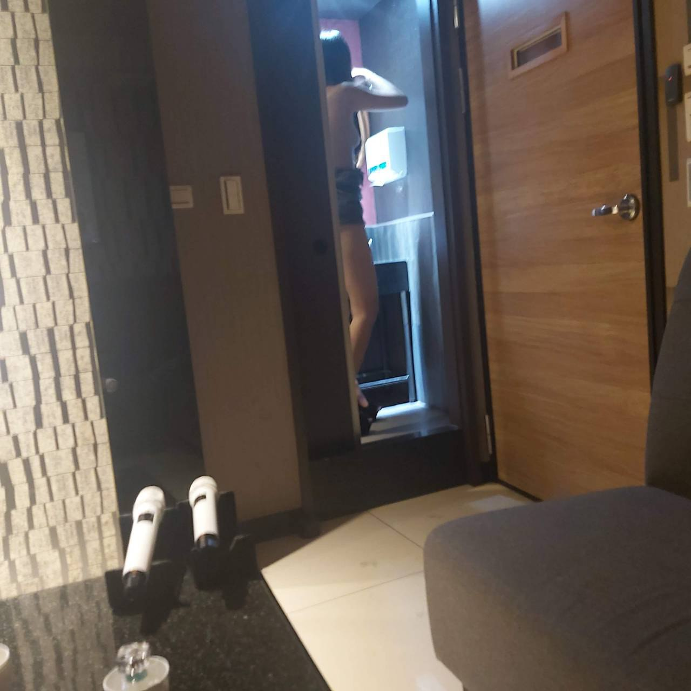
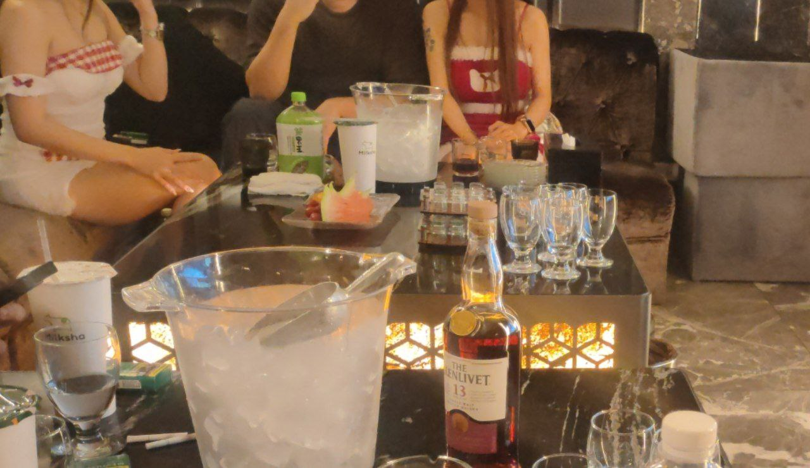
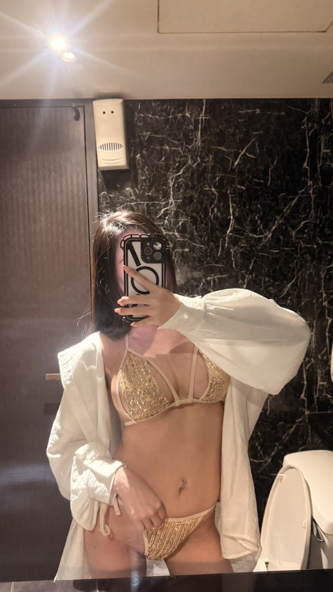
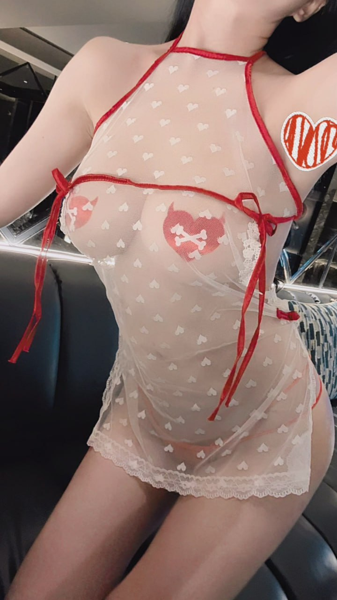
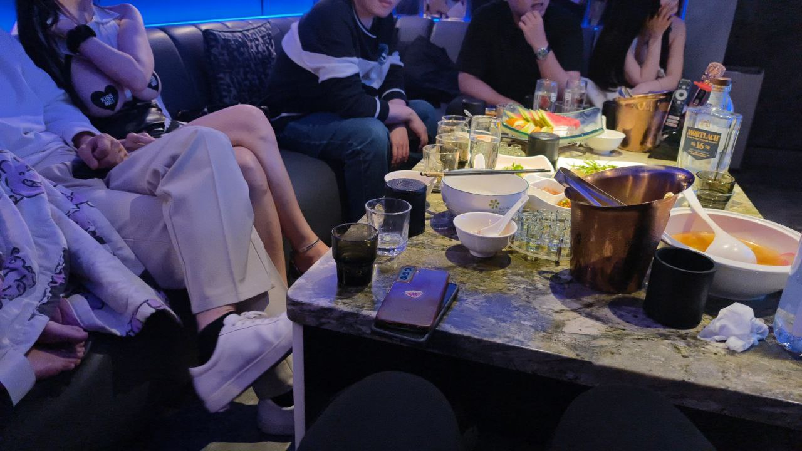
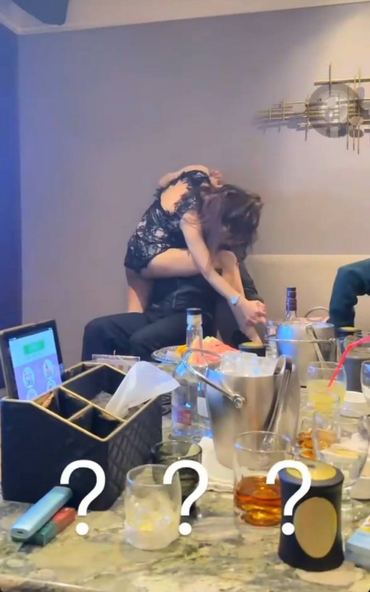

Recommend
台北禮服店推薦看什麼？
先確認這次是商務接待、主管聚會、客戶宴請或朋友局。正式場合通常要優先看包廂質感、流程穩定度、預算透明度與是否能提早安排。
Recommend
先確認這次是商務接待、主管聚會、客戶宴請或朋友局。正式場合通常要優先看包廂質感、流程穩定度、預算透明度與是否能提早安排。
Linsen
林森北禮服店多集中在中山區夜生活商圈，接近長春路、錦州街與新生北路，適合想比較多間台北酒店、需要彈性安排或想就近集合的人。
East
東區禮服店常被用在商務會所、正式接待與較重視場合感的安排。若同行客人住在信義、忠孝復興或東區飯店，交通與形象感會比較順。
Location
不要只看網路舊地址。建議先確認商圈、集合方式、交通時間、包廂樓層與當日可預約狀態，再決定林森北、東區或其他台北酒店商圈。
禮服店適合重視形象、隱私、商務接待與包廂品質的客人。如果同行有客戶、主管、貴賓，或希望整體消費流程更穩定，台北禮服店通常會比熱鬧型制服店更適合。
安排禮服店時，建議先確認包廂等級、基本時間、檯費單位、人頭費、服務費、少爺費、酒水方案與是否可指定。若是重要接待或大型包廂，建議提早預約。
Media
影片可以先看店內接待氛圍，照片則補充正式包廂、桌面細節與禮服店常見的沉穩質感，適合預約前先判斷場合是否合適。

搜尋「禮服店地點」時，最重要的是把場合和交通一起看。林森北禮服店適合想在中山區比較多間台北酒店的人；東區禮服店適合商務接待、飯店接送或希望場合感更正式的安排；若是臨時約局，則要以當天可預約包廂為主。
禮服店的消費差異通常來自包廂規格、同行人數、基本時間、檯費與酒水安排。正式接待建議先抓預算區間，再確認是否需要大包廂、指定時段或較高規格服務。
| 包廂與人數 | 大包廂、商務包廂與一般包廂費用不同，人數會影響人頭費與基本消費。 |
|---|---|
| 檯費與基本時間 | 確認檯費單位、基本時間、是否有最低消費，以及加時如何計算。 |
| 酒水方案 | 正式接待常會指定酒款或套組，預約前可先確認是否符合預算。 |
| 服務費與少爺費 | 禮服店通常較重視接待流程，服務費、少爺費與刷卡費要分項確認。 |
| 加時與追加 | 若商務宴請臨時延長，應先問清楚加時、加點與追加人數的算法。 |
Stores
以下整理台北禮服店與商務會館名單，包含林森北、中山區、東區與其他台北酒店商圈。實際營業狀態、禮服店地點與可預約時段請先聯絡確認。

Focus麗緻酒店屬於中山區禮服店常見名單，適合商務接待、正式聚會與想要穩定品質的客人。費用建議以包廂、人頭、檯費與酒水分開確認。

環球紫藤名店以禮服名店形象與較早時段安排受到關注，適合下午或晚間需要正式接待的客人。安排前可先確認時段與當日可訂狀況。

香閣里拉招待會所偏會所型態，重視包廂質感、接待流程與隱私感。適合商務宴請或想找穩定服務品質的客人。

威斯汀名媛商務會所偏東區禮服名店形象，適合正式、質感與商務聚會。若需要高規格接待，建議預約前先確認包廂與預算。
皇家禮服店 Royal 走中山區禮服店路線，適合宴客、商務應酬與重視儀式感的聚會。實際價格依包廂、檯數與酒水而異。
首席商務會館偏商務會館定位，適合需要接待客戶、安排主管聚會或重視服務流程的人。建議先確認基本消費與可安排時段。
特蘭斯酒店位於林森北與長春路一帶的常見名單，適合重視大包廂、熱鬧氣氛與禮服接待的客人。預約時可先說明包廂需求。

新濠禮服會所屬禮服會所型態，適合商務宴請、朋友聚會與需要正式接待的場合。建議先確認當日店內安排與計費單位。

百達妃麗商務酒店定位為中山區禮服店，適合想找質感包廂與商務接待的人。費用建議先以人數、時間與公關數試算。

金荷會館屬禮服酒店型態，適合中高預算的正式接待與聚會。若希望控制費用，建議先確認基本時間與是否需要加點酒水。

龍昇酒店是中山區禮服店常見名單，適合正式接待、商務聚會與想要清楚費用結構的客人。檯費、包廂、人頭與服務費需分項確認。
FAQ
以下整理搜尋台北禮服店推薦、林森北禮服店、東區禮服店與台北酒店時最常遇到的問題。
建議從地點、包廂質感、接待需求、預算透明度與當日可預約狀態判斷。商務接待可優先確認林森北禮服店或東區禮服店是否符合交通、隱私與預算需求。
台北禮服店常見地點包含中山區林森北路、長春路、錦州街，以及東區、忠孝復興、南京復興周邊。實際地址、樓層與集合方式建議預約時確認。
林森北禮服店多集中在中山區夜生活商圈，店家選擇與換店彈性較高；東區禮服店常見於商務會所與正式接待需求，交通、飯店距離與場合感不同。
預約前應確認包廂費、人頭費、檯費、基本時間、服務費、少爺費、酒水、加時與刷卡費，並依人數與停留時間先抓預算。
Reservation
提供台北禮服店推薦、林森北禮服店、東區禮服店與台北酒店預約諮詢。請先提供日期、時間、人數、預算、偏好地點與接待需求。